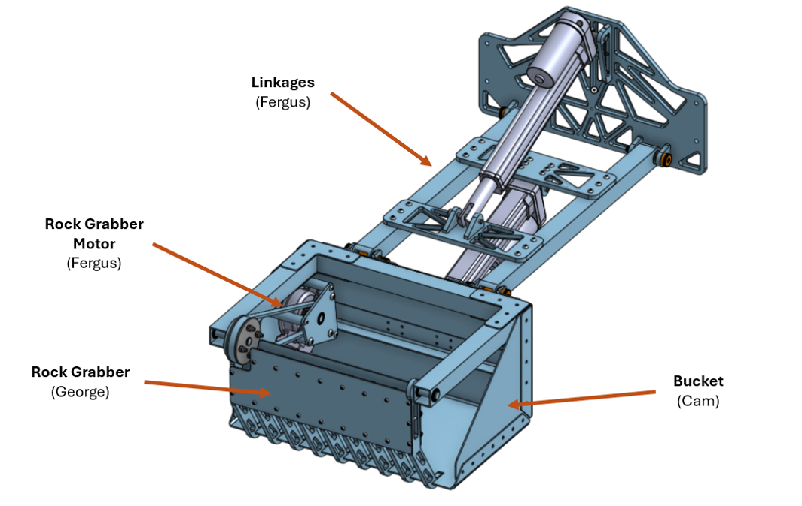
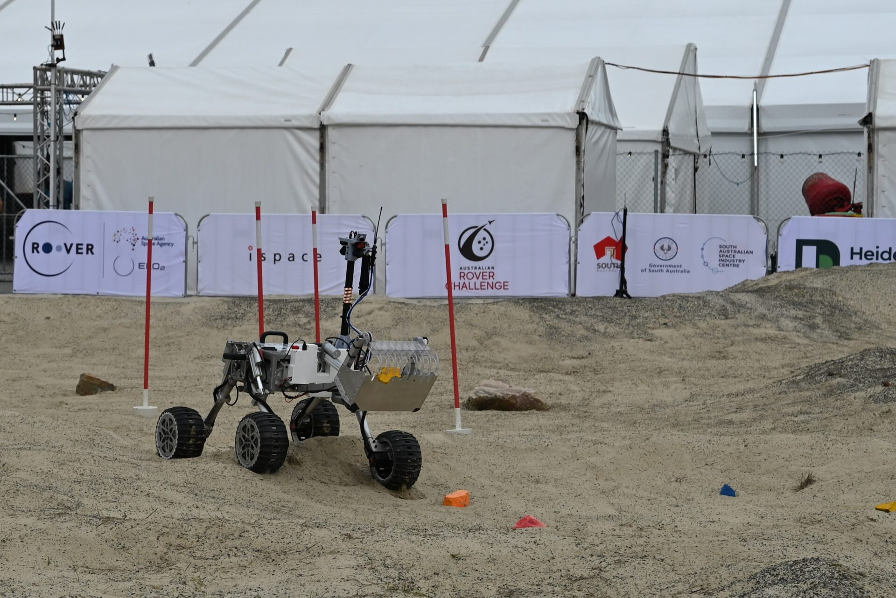
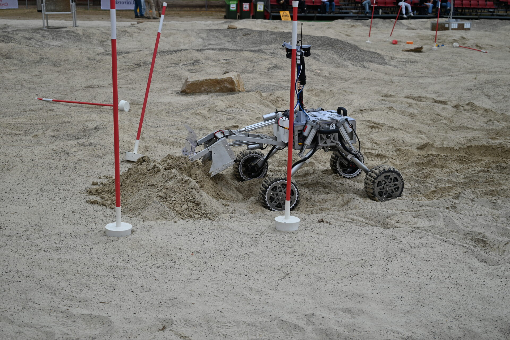

Overview
As part of the Design for Mechanical and Mechatronic Systems subject at UTS, I led a five-member group tasked with designing a new excavation and construction payload for the UTS Rover Team. We were responsible for scoping, designing, manufacturing, and testing a fully working mechatronic system. My responsibilities included the linear actuator-based 2-DoF arm, the baseplate, a motor mount and belt system for the rock claw, procurement, liaising with manufacturers, and managing the team.
The main priority was delivering a simple, complete, and tested subsystem rather than over-scoping and delivering something unfinished. The final design used just two linear actuators and one DC gearmotor.

Excavation and construction payload at the Australian Rover Challenge, Adelaide 2026
Design
The key differentiator in our design was the rock grabber — a polycarbonate claw capable of lifting rocks up to 10kg into the bucket and holding them in place. This made the rock collection portion of the task significantly faster, freeing up more time for berm construction.
The mechatronic implementation was intentionally simple but effective, using microROS over USB and PWM control of three DC motor drivers. Situational awareness was provided by a fisheye USB webcam mounted inside the bucket, giving operators maximum field of view of the collection zone.

Labelled CAD assembly — 2-DoF arm, rock grabber, and bucket
Results
At the 2026 Australian Rover Challenge, the payload performed as designed. The rock grabber allowed the team to collect rocks and regolith faster than any previous team attempt, moving a record amount of regolith in a single run. This contributed directly to winning the Exterres Crater Lab Challenge and qualifying for the NASA Lunabotics competition in the US.


Rock collection and regolith deposit during the Exterres Crater Lab Challenge, Adelaide 2026
Key skills
- Team leadership and project management across a five-member multidisciplinary group
- Mechanism design for a linear actuator-driven 2-DoF arm and belt-driven rock claw
- Design for manufacturing and assembly with a strong focus on scope management and delivery
- microROS integration and PWM-based DC motor control
- Procurement and liaison with external manufacturers
- End-to-end subsystem testing and commissioning under a competition deadline
← Back to projects